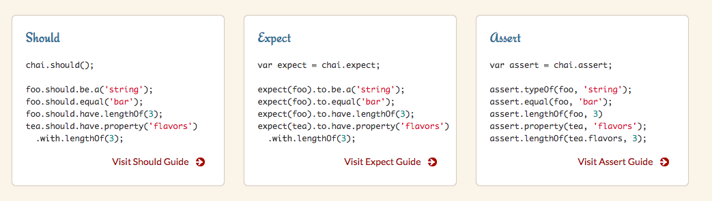

Node.js Frameworks
Module 6 - Debugging & Tests
By Almog LaktiviSetting up debugger
testing

To test or not to test
Testing stack
- Testing framework
mocha, jasmine, jest, alsatian - Assertion library
chai, assert, expect, should - Testing support tools (coverage, mutations)
istanbul, striker
mocha testing framework
describe('test suite', () => {
before(() => {
// will happen once for suite
});
beforeEach(() => {
//will happen before every test
})
it('some test', () => {
expect(true).to.be.eq(true);
});
it('some pending test');
afterEach(() => {
// will happen once after suite
})
after(() => {
// will happen after evety test
});
});
assertion library
Chai is a BDD / TDD assertion library for node and the browser that can be delightfully paired with any javascript testing framework. Coverage: Istanbul


Spies
Spies
A test spy is a function that records arguments, return value, the value of this and exception thrown (if any) for all its calls.
class PersistanceMock implements PersistanceInterface {
getItems = sinon.spy();
getItemById = sinon.spy();
insertItem = sinon.spy();
updateItem = sinon.spy();
deleteItem = sinon.spy();
}
Stubs
Test stubs are functions (spies) with pre-programmed behavior. They support the full test spy API in addition to methods which can be used to alter the stub’s behavior.
var callback = sinon.stub();
callback.withArgs(42).returns(1);
callback.withArgs(1).throws("TypeError");
callback(); // No return value, no exception
callback(42); // Returns 1
callback(1); // Throws TypeError
Demo Time

Any questions?